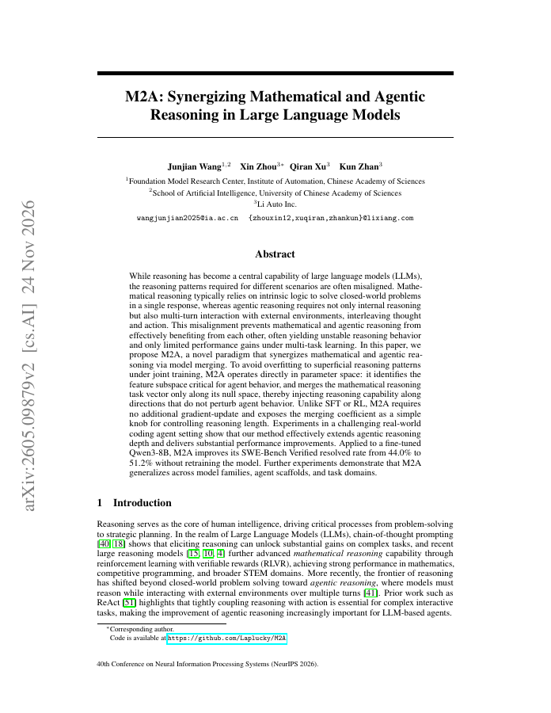
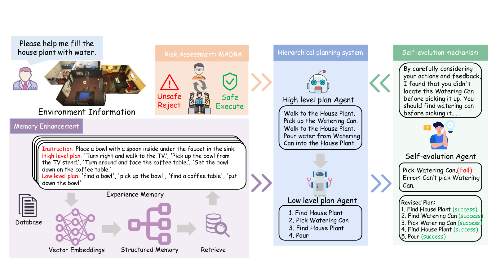
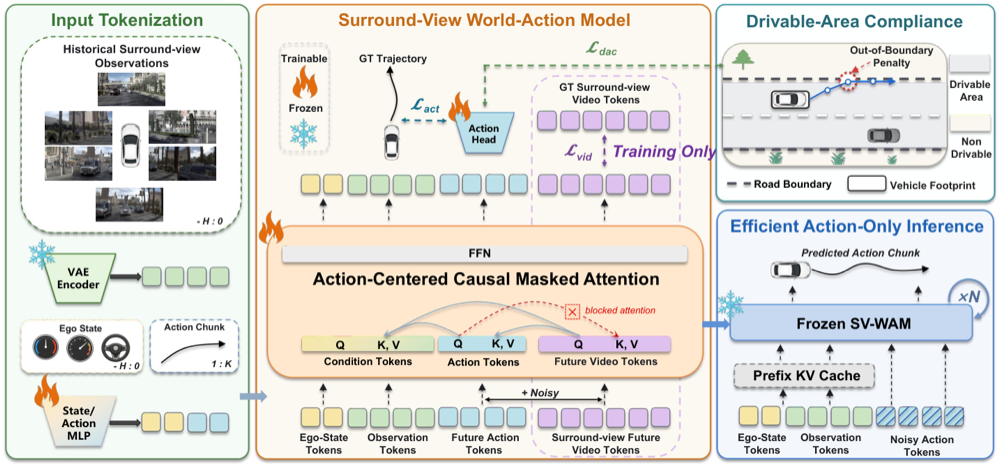

About Me
Hello! I am a research master's student in the Foundation Model Research Center at the Institute of Automation, Chinese Academy of Sciences, co-advised by Prof. Jinqiao Wang and Assoc. Prof. Jianing Zhou. I received my bachelor's degree in Electronic and Information Engineering from Tianjin University.
My research focuses on LLM post-training with reinforcement learning, code and general-purpose agents, and multimodal spatial reasoning.
My recent work includes M2A, which uses model merging to transfer mathematical reasoning to language-model agents, and MADRA, which uses multi-agent debate to assess physical risks in embodied planning. I also co-authored SV-WAM, a surround-view world-action model for autonomous driving.
News
Publications


SV-WAM: An Efficient Surround-View World-Action Model for End-to-End Autonomous Driving
A six-camera world-action model that learns from future video during training and predicts actions directly at inference.
arXiv preprint,
Honors and Awards
- Outstanding Graduate (优秀毕业生), Tianjin University.
- National Scholarship for Undergraduate Students (国家奖学金), Tianjin University.
Internships
-
– Research Intern, Alibaba Amap
- Research Focus · Spatial Intelligence, Multimodal Reasoning, OPD.
- Researched multimodal spatial reasoning and agents, including distilling dynamic spatial reasoning from video-based teachers into image-based models.
- Built a data synthesis pipeline for evaluating dynamic spatial reasoning in complex scenes.
-
– Research Intern, Li Auto
- Research Focus · Coding Agent, LLM post-training, RLHF.
- Researched post-training and model merging for coding agents, including M2A.
- Worked on context management and summary quality for long-horizon agent tasks.